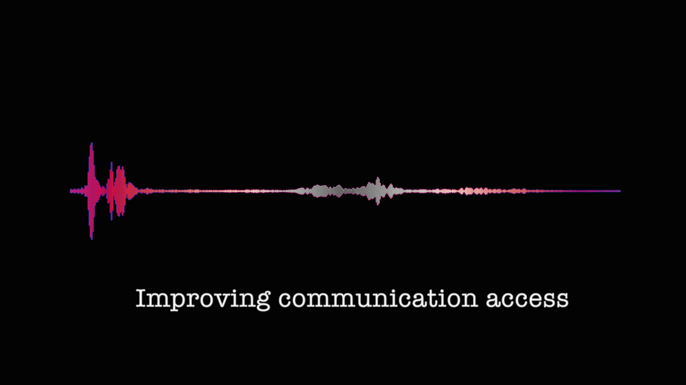

Table of contents
Improving communication access for deaf and hard of hearing people
Developed by Julia Miller & Gabrielle Hodge
With thanks to Ida Rogers, Joshua Sealy and the CoEDL Executive Committee

Last updated: 28 June 2021
This working guide was motivated by feedback provided to CoEDL’s Education Committee about the possibility of improving the accessibility of our educational and other public-facing output for deaf and hard of hearing colleagues, and many other people who benefit from captioned content or sign language interpreting services. It is not an exhaustive description of options available, rather it offers some simple workflows for anyone who wants to create captioned content for recordings after-the-fact or to learn more about providing captions or sign language interpreting for in-person or virtual events. We welcome any feedback, questions or suggestions as we move to improve communication access at CoEDL. Please get in touch via the email addresses above.
Deaf and hard of hearing people have historically been marginalised in academia, and deaf signing people even more so. It is very difficult to request, organise and facilitate effective communication access if you need to use captions and/or a sign language. There are many factors that make this situation difficult. As an example, imagine you are a deaf signing academic, other professional or community member wanting to attend a seminar on a topic relevant to your research and/or community. You must first email the seminar organiser and ask about what (if any) communication access will be provided, and/or set the process in motion for organising your own access.
Responses can vary, but it is common to receive a response such as, “Sorry, we don’t have the funds, there’s no budget line for this,” and no further engagement. A particularly negative and resistant response can involve upwards of twenty emails as the deaf person seeks to explain and justify why they belong at this seminar, and how they can participate. Or it can involve no response at all. Even a positive response will often come with lots of invisible labour in teaching organisers how to work with sign language interpreters, and dealing with various hiccups that come with learning any new process. From the perspective of a deaf person, it won’t be the first nor the last time this happens. These responses are experienced over and over again in different spaces and with different people. Sometimes access is provided, but only after a long and unnecessary battle. Unfortunately, many people experience burn-out and give up along the way. As solutions can often eventually be found, this suggests the main barrier relates to attitudes more so than budgets.
Some of these responses may feel reasonable from an institutional and bureaucratic perspective, but it does not feel reasonable from a personal and individual one. The prevailing ideology is that communication access is too expensive, which means that deafness and deaf or hard of hearing people are treated as financially unsustainable. This is exhausting and harmful to both the deaf person and the academy as a whole. Over time, the cumulative effect is that deaf people and sign languages are not welcome in academic spaces. If the deaf academic or deaf participant is Aboriginal or Torres Strait Islander or from any other underrepresented group who has not historically participated in academia, these issues will be compounded by other barriers resulting from structural racism and other forms of systemic oppression. The result will be that deaf and hard of hearing signing people do not participate and everyone misses out.
As academics committed to equitable and democratic scholarship, we need to consider the impact that various institutional practices and norms can have on different people who want to participate. Many barriers can be removed by understanding what different forms of discrimination look like and how they can be avoided. This working guide is not exhaustive, as it focuses only on communication access for deaf and hard of hearing people. It is important to recognise that facilitating communication access is not just a response to one individual at one meeting or event. In time, many people will benefit as barriers are removed and the space becomes more equitable.
Captioning options to improve accessibility of your audio-visual content
Some terms used
- Closed captioning vs open captioning: Closed captions are ones that you can choose to display or not display. YouTube videos will often have CC options, as does Netflix. Open captions are those that cannot be removed from the display. An example is if you have created a subtitled video and burned the text into the video footage(this process will be described below).
- Automatic captioning: Auto-captioning uses AI (artificial intelligence) to process the speech to text. YouTube uses this technology (this will be discussed below), as do apps that you can use on your computer or smartphone.
- Captions vs transcriptions: Captions are typically presented at the bottom of the video, transcriptions can be provided in a separate file as text, of it can be displayed in a side panel, but not in the video, itself.
What type of access could be offered and when?
- Captioning pre-recorded content:
- When lectures, meetings, seminars, or workshopsare recorded live and with no deaf people or others needing captions presentin the audience, these presentations can becaptioned after the event and made available to the public.
- Pre-recorded videos presented at a conference can be captioned prior to sending to conference organisers. Making a captioned version available would greatly improve access to your content.
- Live captioning and/or interpreting: When deaf or hard of hearing colleagues want to access and participate in live lectures, meetings, seminars, or workshops, you should make sure they have access to one or both of the following (these services may be provided by the participant’s home institution, but this should not be assumed, as affiliation does not guarantee access):
- Live captions or transcriptions (onsite or remote): Captions or transcriptions created by a human which can be done onsite or remotely. One method is referred to as STTR (Speech-to-Text Relay) in Australia and the UK. Another method is CART (Communication Access Real-Time Translation) in the USA. Both terms refer to the same output. The methods used to achieve either may be different, e.g., stenograph versus respeaking, which can affect the quality of captions produced. The output may be presented as captions or a transcription projected onto a screen, and/or sent directly to the laptop of the participant. However, it is important to realise that deaf and hard of hearing participants are often excluded from participating in discussions or question/answer sessions when using captions. This is because there is a delay between what is spoken and what is captioned, and/or when there is no option for deaf and hard of hearing participants to respond via typing text, and/or when they prefer to sign rather than type text. Moderators need to be aware there will be a delay, and check if anyone relying on captions needs clarification or wants to contribute.
- Sign language interpreters: Qualified sign language interpreters can be booked to provide access for signing deaf people who use interpreters. A major benefit is that interpreters facilitate two-way interaction in real time, enabling everyone to access each other. Captions will only work one-way between people with sensorial asymmetries, e.g., between people who do not sign and deaf people who do not speak. Sign language interpreting is a very personal process and quality can vary widely. It is a good idea to liaise directly with the deaf person to find outwhat language, service and interpreters they prefer to use. See below for more information on booking and working with sign language interpreters.
How to caption pre-recorded content
Creating captions using YouTube
Below is a video that instructs you in creating captions for media using YouTube’s AI (Artificial Intelligence) process as a starting point. The steps outlined in the video:
- Upload video to your YouTube page (you need to have a YouTube account)
- YouTube will create captions automatically, usually within a few hours
- Using YouTube Studio from your account page, you will edit any mistakes made by YouTube’s AI process
- Check the appropriateness of the caption alignment and amount of words on the screen, making sure the captions easy to read
- Introduce each new speaker in the captions, e.g.
[SPEAKER: Dr. Smith] Thank you for inviting me today. - Download your newly corrected captions as .srt file
- Combine captions with your video using the free software Handbrake
Options for live captioning of online event
Captions by AI -Artificial Intelligence
- Zoom does have the option for the host of a meeting to engage the live captioning AI tool; however, this is dependent upon your institution’s license with Zoom. At this time, ANU is in negotiations with Zoom to secure a new license, which would include this feature. Check with your versions of Zoom and if it is not a feature you can use, contact your institution’s IT department (those responsible for Zoom) or your Accessibility Services team and lodge a request. This is no guarantee you will get this feature-but providing feedback to your institution will be helpful.
For more information on how this works: https://support.zoom.us/hc/en-us/articles/207279736-Closed-captioning-and-live-transcription
- Zoom + Otter.ai is another method of live transcribing during a meeting, using artificial intelligence. Zoom allows for 3rd party software to perform auto-generated transcripts; this occurs in a separate text box, not as captions within the video window. If your institution does not provide this software to staff, there is a subscription for use. Otter’s Business Plan includes live captions for Zoom.
See University of Melbourne’s findings on accuracy of Otter.ai’s auto-transcripts: https://www.unimelb.edu.au/accessibility/tutorials/zoom/zoom-meetings-and-automatically-generated-transcripts
- Microsoft Teams also has a live captioning feature for meetings held within the MS Teams App.
See University of Melbourne’s findings on accuracy of MS Teams auto-captioning: https://www.unimelb.edu.au/accessibility/video-conferencing-for-hearing-impaired-staff/auto-captioning
1. For it to be useful, you should have a good microphone, the speaker needs clear pronunciation, the participants need to observe good sequential turn taking, and there should be limited background noise
2. AI captioned output will have many mistakes, perhaps even so many that the content is no longer accurate or useful
3. AI software may have subscriptions that are not covered by your institution”
Things to keep in mind with AI auto-captioning
- For it to be useful, you should have a good microphone, the speaker needs clear pronunciation, the participants need to observe good sequential turn taking, and there should be limited background noise
- AI captioned output will have many mistakes, perhaps even so many that the content is no longer accurate or useful
- AI software may have subscriptions that are not covered by your institution
Live human captioning during online meeting
- CART (Communication Access Real-Time Translation)** or STTR (Speech-to-Text Relay) is a service where a trained stenographer is either on-site or at a remote location listening to the speech and types the captions in real time. This is the method used to create transcripts of live court proceedings. However, some CART or STTR services (often for remote captions) are provided via re-speaking technologies, where a person listens to the speech and respeaks it more clearly for the AI recognition technology, which creates the captions. Stenography is a far more accurate method for live captioning.
- Zoom has a feature which allows someone designated by the host to type in what is being said, and this can be seen as closed captions to anyone in the meeting who wishes to view it.
Things to keep in mind with live-captioning
- CART or STTR option will have increased the quality of your transcriptions, but it will be costly, as you are paying for a trained service provider to type in captions during your event
- CART or STTR can be provided by an on-site captioner or remotely. Remote caption services are often cheaper. However, you need to weigh up the benefits for the people requiring access for the meeting
- It is a good idea to talk with the people requiring access to work out the best solution for the specific context
- Deaf and hard of hearing participants are often excluded from participating in discussions or question/answer sessions when using captions. This is because there is a delay between what is spoken and what is captioned, and/or when there is no option for deaf and hard of hearing participants to respond via typing text, and/or when they prefer to sign rather than type text. Remember there will be a delay and check if anyone relying on captions needs clarification or wants to contribute
Providing interpreters who can work between signed and spoken languages
There are many different situations in which you may need to book sign language interpreters. You may have invited a deaf academic from Australia or overseas. You may have received a request from a deaf member of the public to attend a seminar or event. You may be hosting an event on a topic related to deafness, deaf people and sign language and seek to make it accessible for the wider deaf community. Different situations may require different processes for booking sign language interpreters.